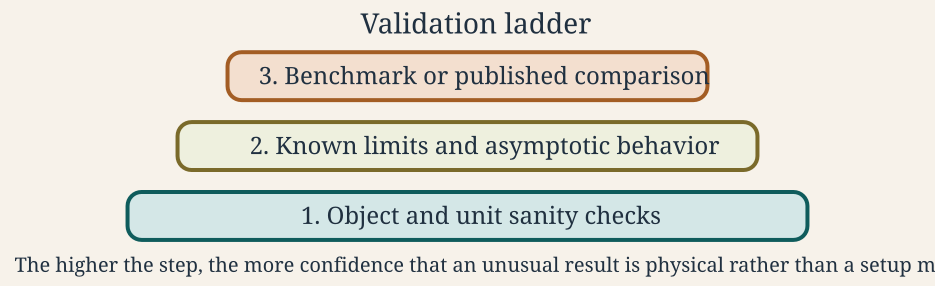

Validation Methods
Source:vignettes/validation-benchmarks/validation-benchmarks.Rmd
validation-benchmarks.RmdWhat validation establishes
A function that runs without error is not necessarily correct. A physically plausible curve is not validation either. Evidence must connect a defined model case to an independent result within a stated geometry, boundary condition, parameter range, numerical configuration, and output convention.

The order matters. Agreement with a published curve is difficult to interpret until units, geometry, material properties, orientation, and normalization have been matched. Regression tests then preserve an established result, but they do not establish its correctness on their own.
Distinguish the checks
Input and object checks
Confirm that constructors, S4 slots, units, dimensions, component placement, material ratios, exterior medium, boundary condition, frequency, and angle describe the intended target. These checks belong close to the initializer and should fail clearly when input is outside the model’s supported domain.
Numerical verification
Numerical verification asks whether the implemented equations are solved consistently. The applicable checks depend on the method and can include:
- convergence with modal truncation, quadrature order, or geometric resolution,
- stability under tighter tolerances or higher precision,
- agreement between equivalent formulations,
- recovery of a simpler solution in a limiting geometry, and
- expected low- or high-frequency asymptotic behaviour.
A convergence check should vary one control at a time and report the quantity being monitored. See Numerical Methods and Special Functions for the numerical components used by the package.
Benchmark reproduction
A benchmark reproduces a fully specified canonical calculation. The
stored cases in benchmark_ts
follow the sphere, finite-cylinder, and prolate-spheroid comparisons
assembled by Jech et al. (2015) and the associated
echoSMs resources (Macaulay and
contributors 2024). Benchmark agreement is evidence
only for the reproduced case and nearby conditions justified by the
model theory.
Independent comparison
Independent software or experimental comparisons provide separation
from the package implementation. They are strongest when the codes do
not share the same derivation, numerical kernel, or stored output.
Existing package evidence includes comparisons with
echoSMs, ZooScatR, and SphereTS
(Macaulay and contributors 2024; Gastauer et al. 2019; Macaulay 2025). The comparison
record must state exactly which branch, boundary, and parameter range
were tested.
Regression testing
A regression test detects later changes to an accepted result. Store regression values only after the case has been tied to theory, a benchmark, or an independent calculation. A test should use a tolerance supported by the reference precision and numerical method, not one chosen only to make the test pass.
Package evidence registry
The model-library badges are generated from the family and evidence
tables in R/validation-registry.R. Their meanings are
defined here:
- Benchmarked means the family has a documented comparison against a canonical benchmark ladder or stored benchmark values.
- Validated means the currently supported public scope has a documented external software or independent-comparison check.
- Partially validated means some supported branches are externally checked, but the full public scope is not yet closed.
- Unvalidated means the package does not yet claim external validation across the current public scope.
- Experimental means the family is available to use, but its interface or supported workflow should still be treated as provisional.
These tags are intended to be read in three pieces:
-
Benchmarkedis independent of the validation badge and can appear alongsideValidated,Partially validated, orUnvalidated. -
The validation badge is always exactly one of
Validated,Partially validated, orUnvalidated. -
Experimentalis a separate lifecycle tag and can coexist with any benchmark or validation badge.
The current family-level claims are:
| Family | Section | Status |
|---|---|---|
| SPHMS | Modal-series families | Benchmarked, Validated |
| FCMS | Modal-series families | Benchmarked, Validated |
| PSMS | Modal-series families | Benchmarked, Validated |
| SOEMS | Modal-series families | Benchmarked, Validated |
| ESSMS | Modal-series families | Unvalidated |
| BCMS | Modal-series families | Unvalidated, Experimental |
| ECMS | Modal-series families | Unvalidated, Experimental |
| DWBA | Approximation and ray-based families | Benchmarked, Validated |
| SDWBA | Approximation and ray-based families | Benchmarked, Validated |
| KRM | Approximation and ray-based families | Benchmarked, Validated |
| HPA | Approximation and ray-based families | Benchmarked, Validated |
| TRCM | Approximation and ray-based families | Benchmarked, Unvalidated |
| PCDWBA | Approximation and ray-based families | Validated, Experimental |
| BBFM | Composite, layered, and transition-matrix families | Unvalidated, Experimental |
| VESM | Composite, layered, and transition-matrix families | Validated, Experimental |
| TMM | Composite, layered, and transition-matrix families | Benchmarked, Partially validated, Experimental |
Show the evidence registered for each family
| Family | Evidence type | Source | Scope | Summary |
|---|---|---|---|---|
| SPHMS | Benchmarked | benchmark_ts / Jech et al. (2015) | Sphere spectra across rigid, soft, liquid-filled, and gas-filled cases. | Benchmarked against the canonical spherical spectra stored in benchmark_ts. |
| SPHMS | Validated | KRMr and echoSMs | Penetrable sphere spectra on shared software definitions. | Validated against KRMr and
echoSMs on shared penetrable-sphere cases. |
| FCMS | Benchmarked | benchmark_ts / Jech et al. (2015) | Finite-cylinder spectra across the canonical cylindrical benchmark grid. | Benchmarked against the canonical finite-cylinder spectra stored in benchmark_ts. |
| FCMS | Validated | echoSMs | Rigid, soft, liquid-filled, and gas-filled finite-cylinder spectra. | Validated against the echoSMs finite-cylinder implementation. |
| PSMS | Benchmarked | benchmark_ts / Jech et al. (2015) | Prolate-spheroid spectra across the canonical benchmark grid. | Benchmarked against the canonical prolate-spheroid spectra stored in benchmark_ts. |
| PSMS | Validated | Prol_Spheroid and echoSMs | Liquid-filled and gas-filled prolate-spheroid software comparisons. | Validated against the external Prol_Spheroid and echoSMs implementations on shared prolate cases. |
| SOEMS | Benchmarked | Published calibration spheres | Tungsten-carbide and copper calibration spheres. | Benchmarked against published calibration-sphere targets used throughout the package documentation. |
| SOEMS | Validated | echoSMs, SphereTS, NOAA applet | Shared calibration-sphere material sets and frequency sweeps. | Validated against echoSMs, SphereTS, and the NOAA calibration applet. |
| BCMS | Experimental | Internal FCMS-based reference reconstruction | Uniform-curvature cylinder coherence extension of FCMS. | BCMS is currently marked experimental because the documented checks are internal coherence reconstructions rather than an external benchmark or software-comparison ladder. |
| ECMS | Experimental | Independent algebra transcription | Elastic-cylinder component family and near-broadside canonical cases. | ECMS is currently marked experimental because the documented checks are independent algebra reconstructions rather than an external benchmark or software-comparison ladder. |
| DWBA | Benchmarked | benchmark_ts / Jech et al. (2015) | Weakly scattering sphere, prolate spheroid, and cylinder targets. | Benchmarked against the canonical spectra stored in benchmark_ts. |
| DWBA | Validated | McGehee et al. (1998) and echoSMs | Bundled krill geometry and published DWBA reference workflows. | Validated against the published McGehee et al (1998) and echoSMs workflows. |
| SDWBA | Benchmarked | benchmark_ts / Jech et al. (2015) | Weakly scattering sphere, prolate spheroid, and cylinder stochastic targets. | Benchmarked against the canonical spectra stored in benchmark_ts. |
| SDWBA | Validated | CCAMLR MATLAB, NOAA applet, echoSMs | Bundled krill stochastic workflow comparisons. | Validated against the CCAMLR, NOAA applet, and echoSMs implementations. |
| KRM | Benchmarked | benchmark_ts / Jech et al. (2015) | Canonical isolated targets used for the package KRM benchmark ladder. | Benchmarked against the canonical spectra stored in benchmark_ts. |
| KRM | Validated | KRMr, echoSMs, NOAA applet | Bundled sardine and cod software-to-software comparisons. | Validated against KRMr, echoSMs, and the NOAA KRM applet on bundled fish objects and shared workflows. |
| HPA | Benchmarked | benchmark_ts / Jech et al. (2015) | Sphere, prolate spheroid, and cylinder asymptotic benchmark targets. | Benchmarked against the canonical spherical spectra stored in benchmark_ts. |
| HPA | Validated | echoSMs | Spherical HPModel branch and published asymptotic formulas. | Validated against the spherical echoSMs implementation. |
| TRCM | Benchmarked | benchmark_ts / Jech et al. (2015) | Straight and bent cylindrical validation cases documented in the package. | Benchmarked within the package validation workflow against the canonical spectra stored in benchmark_ts. Further compared to the straight-cylinder and FCMS-derived bent-cylinder reference constructions. |
| PCDWBA | Validated | benchmark_ts / Jech et al. (2015) | Curved weak-scattering reference workflows on shared bent-body cases. | Validated against source-level ZooScatR and Echopop PCDWBA workflows. |
| PCDWBA | Experimental | ZooScatR | Current package-facing PCDWBA workflow and argument surface. | PCDWBA is currently marked experimental because the public package workflow is still being tightened even though the current source- level comparison cases are documented. |
| BBFM | Experimental | Internal DWBA + ECMS reconstruction | Internal composite-component consistency checks only. | BBFM is currently marked experimental because it has documented internal reconstruction checks but no external benchmark ladder or independent public implementation comparison. |
| VESM | Validated | Reference Python VESM workflow | Documented spherical layered case used by the original VESM implementation. | Validated against the reference Python VESM implementation on the documented layered-sphere case. |
| VESM | Experimental | Current layered-sphere workflow surface | Current documented layered-sphere workflow surface. | VESM is currently marked experimental because the documented public workflow is still limited to the current layered-sphere scope. |
| TMM | Benchmarked | SPHMS / PSMS / FCMS benchmark ladder | Sphere, oblate, prolate, and guarded cylinder monostatic branches. | Benchmarked against SPHMS,
PSMS, and FCMS on the currently supported
canonical shape branches. |
| TMM | Validated | BEMPP far-field checks | Pressure-release angular slices for sphere, oblate, and prolate cases. | Validated against external BEMPP far-field checks for sphere, oblate, and prolate pressure-release cases. |
| TMM | Validated | Exact general-angle spheroidal solution | General-angle prolate retained-state validation. | Retained prolate angular products are also checked against the exact general-angle spheroidal solution. |
| TMM | Partially validated | Cylinder retained-angle scope | Cylinder retained-angle scope limitation and guardrails. | TMM is partially validated because the sphere, oblate, and prolate branches have external checks, but retained general-angle cylinder products remain outside the validated public scope. |
| TMM | Experimental | Current retained-state branch matrix | Current retained-state branch matrix across supported shapes. | TMM is currently marked experimental because the retained-state workflow and branch matrix are still guarded while shape-specific support continues to be tightened. |
The registry is an index, not the evidence itself. Each row should point readers to a model implementation page that records the comparison target, controls, metric, tolerance, figure, and limitations. A family may be benchmarked while some of its public branches remain unvalidated. The family badge must reflect that narrower scope.
Adding validation evidence
Use the following sequence when adding or changing a solver:
- Define the claim. Name the geometry, boundary, frequency or angle range, material values, numerical branch, and output quantity being checked.
- Choose an independent reference. Prefer a published table, archived dataset, separately implemented code, exact limit, or trusted canonical solution over a plot digitized without its full setup.
- Reconstruct the target explicitly. Do not rely on session state or undocumented defaults. Record units and angle conventions.
-
Compare in the correct domain. Use
TSfor reported decibel agreement,sigma_bsfor linear scattering strength, and complex amplitude when phase or coherent interference is part of the claim. - Check nearby numerical stability. Vary truncation, discretization, quadrature, precision, or tolerance as appropriate.
- Store a durable result. Commit compact numeric data and the rendered figure when they are part of the public evidence.
- Add tests. Test the result, output structure, invalid inputs, and relevant limiting behaviour.
- Update the registry last. Change badges only after the supporting page, data, and tests are present.
Deep nulls deserve special care. A small absolute error in
sigma_bs can become a large difference in TS,
while agreement in TS says nothing about complex phase.
Report the comparison domain beside the metric and tolerance.
Reproduce a bundled case
The following code rebuilds the 10 mm-radius fixed-rigid sphere case. It is not evaluated during site construction because the benchmark output is already committed:
library(acousticTS)
data(benchmark_ts)
frequency <- benchmark_ts$frequency_spectra$index$frequency
reference <- benchmark_ts$frequency_spectra$sphere$fixed_rigid
sphere_obj <- gas_generate(
shape = sphere(radius_body = 0.01, n_segments = 60)
)
sphere_obj <- target_strength(
object = sphere_obj,
frequency = frequency,
model = "sphms",
boundary = "fixed_rigid",
density_sw = 1026.8,
sound_speed_sw = 1477.3
)
predicted <- extract(sphere_obj, "model")$SPHMS$TS
delta_dB <- predicted - reference
c(
max_abs_dB = max(abs(delta_dB)),
rmse_dB = sqrt(mean(delta_dB^2))
)
all.equal(predicted, reference, tolerance = 1e-2)The SPHMS, FCMS, and PSMS implementation pages document their model-specific comparisons and numerical controls.
Generated evidence and provenance
Public implementation figures are committed outputs. Their builders
live under tools/implementation-figures/, which is excluded
from the package bundle and is not run during ordinary package
installation or pkgdown rendering. The manifest records each family,
builder, package-code input, and expected output.
Run all builders from the repository root with:
source("tools/implementation-figures/run_all.R")Set ACOUSTICTS_IMPL_FAMILIES to a comma-separated family
list for a selected rebuild. The runner uses one sequential R subprocess
per family, validates declared outputs, and writes commit, elapsed-time,
size, and MD5 provenance to
.tmp/implementation-figures/provenance.csv. Pull requests
rebuild affected families and fail when committed outputs drift from
their declared inputs.
A complete validation record should retain:
- the package version or commit and relevant input hashes,
- the reference source and citation,
- geometry, units, material values, exterior medium, and boundary condition,
- frequency and angle grids,
- numerical controls and software versions,
- the comparison domain, metric, tolerance, and result, and
- the code that generated committed tables or figures.
When a model is used outside this recorded scope, describe the calculation as an application or extrapolation. Do not silently broaden the validation claim.